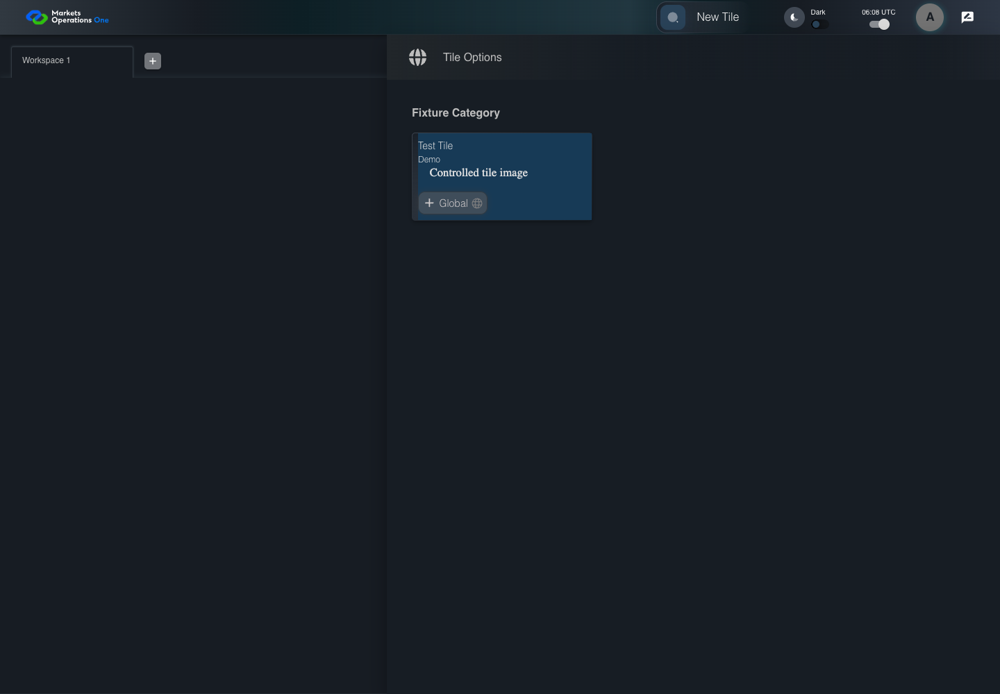

UI-CAT-018 transfer the declared parameter object
PASS · application/run-050/ui-cat-018-transfer-the-declared-parameter-object-1ef34d80aae6-attempt-1 · ACTUAL_APPLICATION_LOCAL_SERVICES
Actual current React shell. Controlled login, validation, and activity renewal responses supply UI-USER-01, catalog, and entities. A controlled SystemJS React container displays routes and parameters. Local fixture SVGs replace catalog images. Identity, entitlements, and business tenant behavior are not established.
2026-10-22T06:08:12.323Z to 2026-10-22T06:08:15.069Z
Assertions and result · Artifact manifest · Exact run inputs and source hashes
Result SHA-256:9a06540f02d2f2377b904e2a86259892ec98c4312b4bea3e02b03f90918b5d37Screenshot capture: CAPTURED. Named frames: 6.
Step screenshot bindings: COMPLETE. 5/5 canonical steps have execution screenshots.
Bindings measure structural coverage only. They do not establish screenshot content quality or relevance.
Screenshot content review: NOT_REVIEWED. Recorded context: 0/6 frames. Identical image bytes: 2 repeated frames. Recorded context does not establish human visual review.
Canonical step timeline
Given User A is authenticated as fixture UI-USER-01 with the case-specific permissions
Execution: PASSED.
1. step-01 Visible state after step 1: Given User A is authenticated as fixture UI-USER-01 with the case-specific permissions
2026-10-22T06:08:13.837Z · 1440×1000
Step: /Users/lushevol/code/github/ratan-release-impact/workbench/tasks/ui-test-coverage-20261022/test-cases.md:6811
SHA-256:fcdb7e886745751817c5a9e551fd47a62899d6497092ca8f80a5c9e3d9e7d6d1And T-GLOBAL has parameters {"desk":"SG","includeClosed":false}
Execution: PASSED.
2. step-02 Visible state after step 2: And T-GLOBAL has parameters {"desk":"SG","includeClosed":false}
2026-10-22T06:08:14.030Z · 1440×1000
Step: /Users/lushevol/code/github/ratan-release-impact/workbench/tasks/ui-test-coverage-20261022/test-cases.md:6812
SHA-256:190db08af3d4cdcea35c510508cdccce90874fd2a642e56aad9c4b8a51c27356When User A clicks button named "Global" inside the section identified by title "Test Tile" and subtitle "Demo"
Execution: PASSED.3. step-03 Visible state after step 3: When User A clicks button named "Global" inside the section identified by title "Test Tile" and subtitle "Demo"
2026-10-22T06:08:14.184Z · 1440×1000
Step: /Users/lushevol/code/github/ratan-release-impact/workbench/tasks/ui-test-coverage-20261022/test-cases.md:6813
SHA-256:cab50ba14bd3b81c17b59b57bba500602267069862eb78899120cc20d9a82c8cThen the controlled container in the selected tile tabpanel displays parameter "desk" with value "SG"
Execution: PASSED.4. step-04 Visible state after step 4: Then the controlled container in the selected tile tabpanel displays parameter "desk" with value "SG"
2026-10-22T06:08:14.438Z · 1440×1000
Step: /Users/lushevol/code/github/ratan-release-impact/workbench/tasks/ui-test-coverage-20261022/test-cases.md:6814
SHA-256:9fa4beeac6985e9791ebdc9554275a9031413ef4fee97db4669221dc39bb087aAnd the same controlled container displays parameter "includeClosed" with boolean value false
Execution: PASSED.
5. step-05 Visible state after step 5: And the same controlled container displays parameter "includeClosed" with boolean value false
2026-10-22T06:08:14.536Z · 1440×1000
Step: /Users/lushevol/code/github/ratan-release-impact/workbench/tasks/ui-test-coverage-20261022/test-cases.md:6815
SHA-256:9fa4beeac6985e9791ebdc9554275a9031413ef4fee97db4669221dc39bb087aImage bytes match frame 4. An unchanged image can be valid for consecutive assertions. This match does not establish correct step content.
Additional named frames

The final visible state after the named test assertions.
2026-10-22T06:08:14.690Z · 1440×1000Step: Test source: /Users/lushevol/code/github/ratan-release-impact/workbench/e2e/audit-specs/catalog-profile-expanded.spec.ts:217
SHA-256:
9fa4beeac6985e9791ebdc9554275a9031413ef4fee97db4669221dc39bb087aImage bytes match frame 5. An unchanged image can be valid for consecutive assertions. This match does not establish correct step content.
Screenshots establish visible state only. Assertions and traces support functional claims.